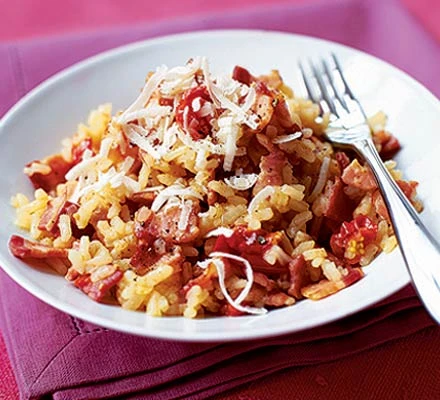

Oven-baked Risotto

Description
Cook this simple storecupboard risotto in the oven while you get on with something else, the result is still wonderfully creamy
Ingredients
- 250g pack smoked bacon, chopped into small pieces
- 1 onion, chopped
- 25g butter
- 300g risotto rice
- half a glass of white wine (optional)
- 150g pack cherry tomatoes, halved
- 700ml hot chicken stock (from a cube is fine)
- 50g parmesan, grated
Steps
- Heat oven to 200C/fan 180C/gas 6. Fry the bacon pieces in an ovenproof pan or casserole dish for 3-5 mins until golden and crisp. Stir in the onion and butter and cook for 3-4 mins until soft. Tip in the rice and mix well until coated. Pour over the wine if using and cook for 2 mins until absorbed.
- Add the cherry tomatoes and the hot stock, then give the rice a quick stir. Cover with a tightly fitting lid and bake for 18 mins until just cooked. Stir through most of the parmesan and serve sprinkled with the remainder.